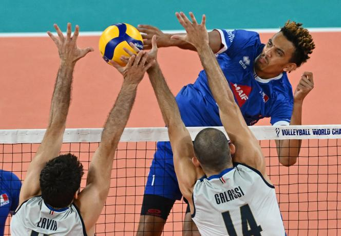
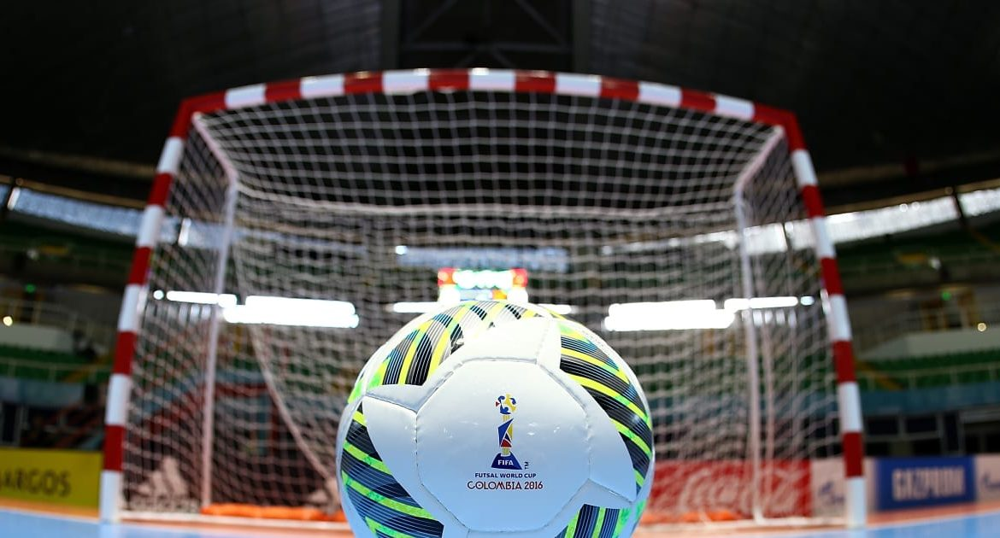

Datos Personales

Datos
Nombre: Cristian Eduardo Nuñez Valencia
Edad: 21 años
Estatura: 1.82 cm
Pais de origen: Colombia
Pasatiempos
Soy una persona amante del deporte y actividad física, me gusta practicar todo tipo de deporte, pero tengo cierta preferencia hacia el futsal y volleyball. Por otra parte, me gustaría aprender a jugar tenis, pero se me dificulta por diversos motivos. También, me gusta ver películas o series en mi tiempo libre ó escuchar música para relajarme.
👻 Just Do It 👻

©Copyrigth 2022 - Universidad del Cauca
Popayán-Cauca